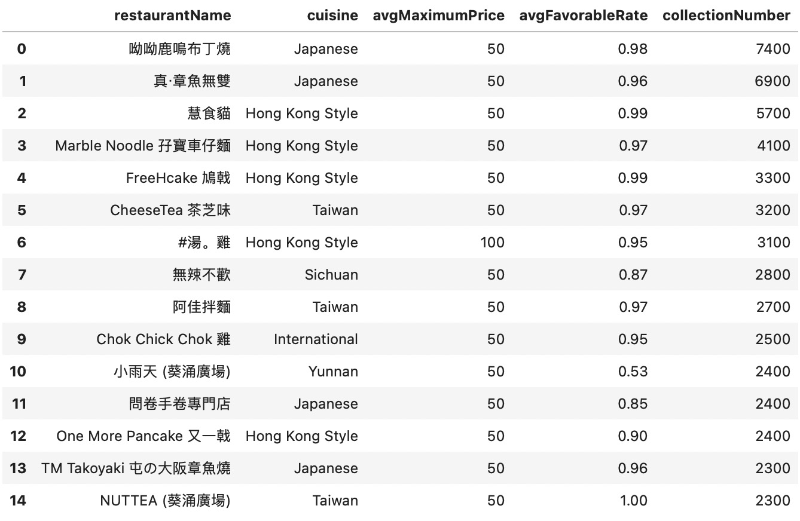

Assignment 2
Populor on RED? Explore the food at Kwai Chung Plaza!
Hi！ This is the second assignment of COMM5961.
Kwai Fong food has gone viral on the social media "RED", with many popular posts of food recommendations, with recommendations for snacks at Kwai Chung Plaza being particularly hot. Why are these food so popular on RED? In order to explore the characteristics of Kwai Chung Plaza's food and cuisine, I crawled, cleaned and analyzed data from the Kwai Fong area of the openrice webpage.
In order to better explore this phenomenon, I first compared the data of Kwai Chung Plaza with the data of the whole Kwai Fong area to find out whether there is any consistency or difference.
1. The variety of restaurant cuisines
The top ten restaurant cuisines in Kwai Fong and Kwai Chung Plaza are depicted in the two bar charts below.
Hong Kong Style, Japanese, and Taiwan food are the three most popular. It may indicate that local residents have the greatest demand for Hong Kong-style restaurants, but there is also a sizable market for Japanese and Taiwanese cuisine.
In terms of the number of restaurants serving various cuisines, these two sets of data are highly consistent, indicating that the variety of cuisines available in Kwai Chung Plaza meets market demand.
2. Favorable Rate of Restaurants with Different Cuisines
The two tables below show the average favorable ratings of the top ten restaurant cuisines in Kwai Fong and Kwai Chung Plaza, respectively.
Guangxi, Australian, Vietnamese, and French are the top-rated cuisines in Kwai Fong, while Western, Australian, and American are the top-rated cuisines in Kwai Chung Plaza.
The two sets of data show differences in the positive feedback rates of different cuisines, with the Western food category having the highest average favorable rate in Kwai Chung Plaza.
3. Analysis of Popular Shops in Kwai Chung Plaza
The table below lists the top 15 restaurants in terms of cuisine and average maximum price that have the highest collection as a measure of hotness.

The average maximum price of the top 15 most popular restaurants is less than 100 hkd, and the majority of them are less than 50 hkd, so the low price may be one of the reasons they are so popular.
The top 15 restaurants in terms of cuisine contain 6 different cuisines, indicating that there is a wide variety of food options here.
Furthermore, only three of these fifteen stores have a positive feedback rate less than 90%, and the overall positive feedback rate is very high, reflecting people's high satisfaction with the food here.
Summary
To summarize, the number of cuisines available at Kwai Chung Plaza corresponds to market demand. Not only is there a wide variety of dishes, but the prices are low and cost-effective, and people are satisfied with the food, which is likely why Kwai Chung Plaza's food is widely recommended and well-received on RED.
Considering the combined heat and positive reviews, if I were to make a recommendation of Kwai Chung Plaza food on RED, I would choose 呦呦鹿鸣布丁烧、真-章鱼无双和慧食猫 for recommendation ~